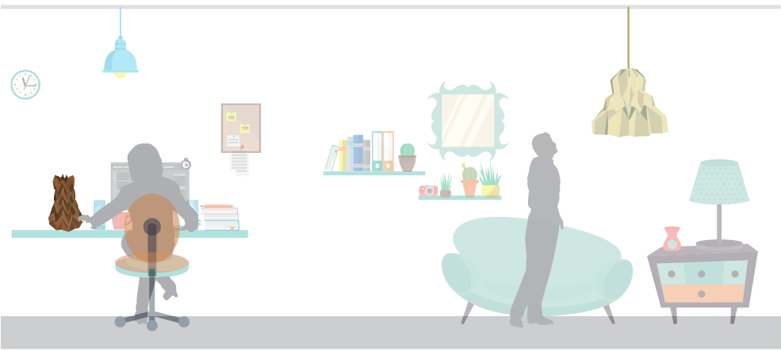
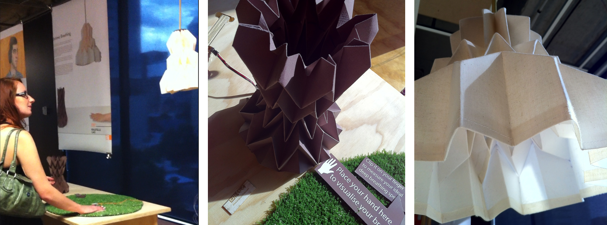

Breathing is something we all have but too often we take it for granted. This project aims to create awareness of abdonimal breathing rhythm in everyday life, which leads to relaxation and further health benefits. The product system targets people who sit in front of computer for long hours, perhaps in a high stress environment; providing them an ambient source of relaxation and de-stress.
The project was done in 2012 during my honour year of industrial design as my individual thesis project, supervised by Dr Scott Mitchell . Throughout the year I went through user research, experience design and several attempts of prototyping using microcontroller Arduino board to conduct user tests.
Project vision
Relaxation
Awareness
Health therapy
The main focus of the project is to create a system that helps the user to exercise deep breathing. The first level of the vision is to provide relaxation through deep breathing exercise for everyone, especially for those who work in a high stress environment or frequently perceive pressure from everyday life The second level is to create awareness. Through doing the exercise regularly, ideally user could see the importance of deep breathing and eventually lead to several health benefits. As there are several issues that accompanied with our everyday stress, to name a few, such as sleep disorder, depression and anxiety; deep breathing is a simple method that can be done anywhere and anytime.
Design process
project timeline and milestones. end result of each stages
The making...and lots lots testing
origami paper prototype testing

arduino programming and testing with different sensors/ electronics
moving from paper origami to fabric pleating
Journey mapping
Final design
Product feature
Distance sensing
It does not require an on/off button to start. As it senses a person is nearby it would start 'breathing' for 5 minutes every hour.
Hourly deep breathing exercise
After the first breathing exercise finishes, it would start counting and resume the breathing exercise for 5 minutes every hour.
Optional pulse sensing
Besides hourly breathing exercise, it has a small clip as the pulse sensor to detact user's pulse. It then translate the data into current breathing speed, and slowly guides towards ideal deep breathing rhythm.
Next step
The main idea of this project is to help everyone to realise deep breathing is something everyone could do anywhere to relax, to benefit both mental and physical health. As it's a simple idea for everyone, the final outcome should be something accessible too. The future of this idea could be turned into a DIY pack that everyone could download the paper folding template, using paper, fabric or any other materials to make then connect to the right chip to make it work. Apart from the DIY pack, the ideas could be added onto existing items such as air diffuser, so that not only the scent helps people to relax it also encourages them to deep breath regularly.
Retrospective
I had a lot of fun doing this project as it was done in a combination of high-tech and low-tech: a mix of programming on microcontroller and paper folding techniques. That was a hectic year! Ha! However setting myself up in such challenges made me realised how much I love both design and technology.
On a side note...
While working on the final prototype, I got a little bit obsessed with fabric pleating and started DIY my own handbag that I carried everyday! To me being a designer is not just a day job but a life-long passion that I live and breath what I do. While working on my project, I get inspiration from things around my life; and also inspired by my project to work on things around me.
 Home
Home